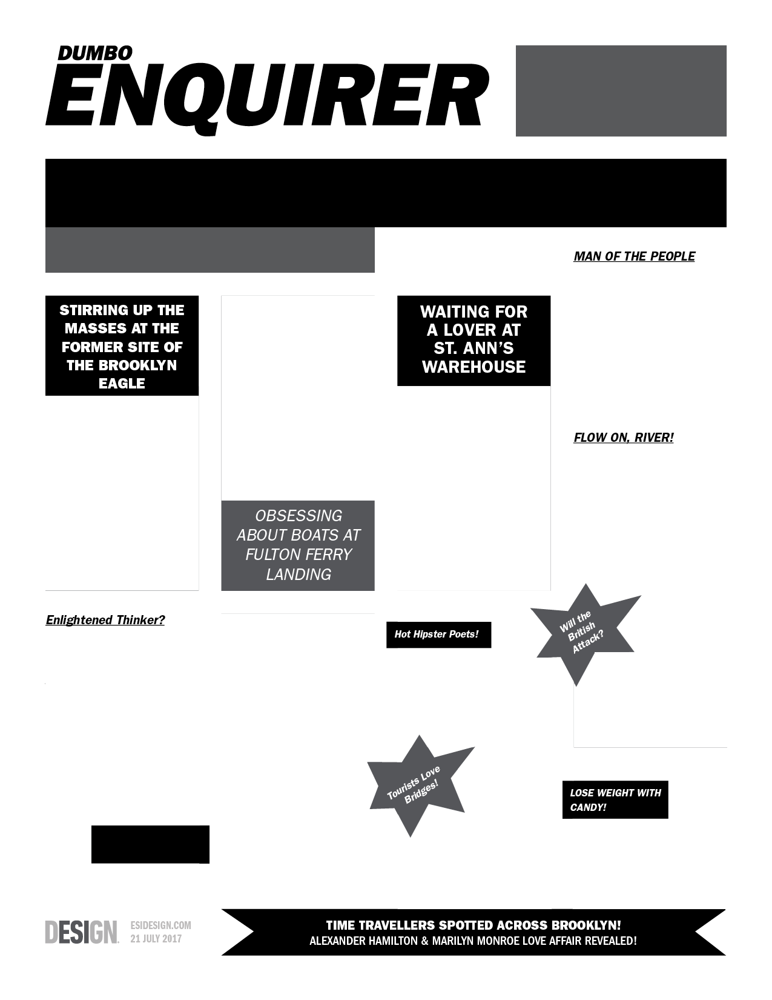

Whitman Wanders the Waterfront
DUMBO Secrets Revealed!
BY J.J. HUNSECKER
CULTURAL ICON OR SEX SPOT?
When Whitman became editor of the Brooklyn Eagle in 1846, he wasn’t just interested in local news. He also used the paper as a platform for political opinions about immigration, labor issues, and more. How smart was that? In 1848, the pro-slavery owner of the newspaper fired him for writing anti-slavery articles.
One of Whitman’s most famous poems is “Crossing Brooklyn Ferry,” which goes on (and on) about the river, sunsets, ferries, crowds, seagulls, and NYC. If he’d written it today, he might include the line “Stand up, gentrified high-rises of DUMBO!”
As a writer, Whitman goes deep into the lives of his subjects, even if it’s just a lamppost. He thinks today’s lamppost might say, “I’m way more classy than neon or new-fangled LEDs.” What a nut!
Whitman’s friend (and possible lover) Gabriel Harrison, who was lurking in Brooklyn Bridge Park, claims that “Whitman writes really great poems, but can’t rhyme very well.” An actor, playwright, photographer, and more, Harrison’s a 19th-century James Franco. What’s he up to now? Building time machines??